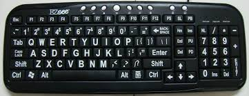
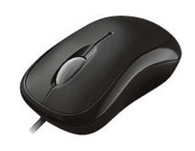
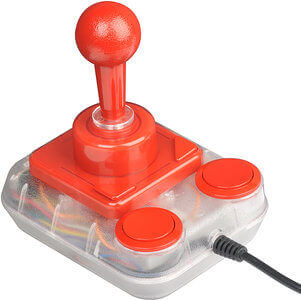

CHAPTER 5 - INPUT DEVICES
INPUT DEVICES
Input device enables the user to send data, information, or control signals to a computer. The Central Processing Unit (CPU) of a computer receives the input and processes it to produce the output.
1) Keyboard
The keyboard is a basic input device that is used to enter data into a computer or any other electronic device by pressing keys. It has different sets of keys for letters, numbers, characters, and functions. Keyboards are connected to a computer through USB or a Bluetooth device for wireless communication.
2) Mouse
The mouse is a hand-held input device which is used to move cursor or pointer across the screen. It is designed to be used on a flat surface and generally has left and right button and a scroll wheel between them. Laptop computers come with a touchpad that works as a mouse. It lets you control the movement of cursor or pointer by moving your finger over the touchpad. Some mouse comes with integrated features such as extra buttons to perform different buttons.
3) Scanner
The scanner uses the pictures and pages of text as input. It scans the picture or a document. The scanned picture or document then converted into a digital format or file and is displayed on the screen as an output. It uses optical character recognition techniques to convert images into digital ones. Some of the common types of scanners are as follows:

4) Joystick
A joystick is also a pointing input device like a mouse. It is made up of a stick with a spherical base. The base is fitted in a socket that allows free movement of the stick. The movement of stick controls the cursor or pointer on the screen. The frist joystick was invented by C. B. Mirick at the U.S. Naval Research Laboratory. A joystick can be of different types such as displacement joysticks, finger-operated joysticks, hand operated, isometric joystick, and more. In joystick, the cursor keeps moving in the direction of the joystick unless it is upright, whereas, in mouse, the cursor moves only when the mouse moves.
5) Digital Camera
It is a digital device as it captures images and records videos digitally and then stores them on a memory card. It is provided with an image sensor chip to capture images, as opposed to film used by traditional cameras. Besides this, a camera that is connected to your computer can also be called a digital camera. It has photosensors to record light that enters the camera through the lens. When the light strikes the photosensors, each of the sensors returns the electrical current, which is used to create the images.

PREVIOUS NEXT